Introduction to Neurology
- The neuro approach: 1. describe the problem (history, exam) → 2. localize the lesion → 3. build a differential from the time course and the localization → 4. plan tests and treatment. Localization decides what to image (no CT head for a cord problem).
- UMN (brain, brainstem, cord): hyperreflexia, spasticity, Babinski (extensor plantar), no atrophy or fasciculations. LMN (anterior horn cell, root, plexus, nerve, NMJ, muscle): ↓ reflexes, atrophy, fasciculations, normal tone, flexor or absent plantar.
- Pattern of weakness: hemibody + face/cranial nerves = brain; four limbs = cervical cord; both legs = thoracic cord or lumbar roots; eyes and swallowing = NMJ; proximal symmetric = muscle. Sensation spared = anterior horn cell, NMJ or muscle. Bladder = cord or cauda equina. The cord ends at L1: above = UMN, below = LMN.
- Time course → cause: seconds–minutes = stroke, migraine aura, trauma; hours–days = inflammation, infection; days–weeks = tumour, infection, inflammation, toxic (and chronic subdural); months–years = degenerative, hereditary. Mnemonic VITAMINS C&D.
- Homunculus, medial → lateral: leg → shoulder → hand → face. So an MCA stroke = contralateral face and arm > leg. Cerebellum and basal ganglia lesions don't cause weakness: cerebellum = incoordination (think drunk); basal ganglia = slowness and rigidity (Parkinson's) or extra movements. Behind the chiasm, each side of the brain sees the opposite visual field.
Learning Objectives
- Outline the Neuroscience, Eye and Ear block.
- Define common terms used in neurology.
- Discuss why localizing the lesion and the differential diagnosis matter in focal neurological symptoms.
- Describe the organization of the nervous system, microscopic to macroscopic.
Dr. Christen Shoesmith (neurology): a 20-minute introduction (recorded) plus optional review chapters from her Foundations of Medicine lecture (75 min of text: organization, motor and sensory/visual pathways, localization, lesion differential and four practice cases). The block: weeks 1–1.5 neuroanatomy and neurophysiology; 1.5–4 clinical neurology and neurosurgery; week 4 eye and ear. ~10% of family-practice visits are for a neurological symptom.
The Vocabulary
| Term | Meaning |
|---|---|
| -plegia | Paralysis: essentially no voluntary movement |
| -paresis | Weakness |
| Hemiplegia | Can't move one arm and the same-side leg |
| Paraparesis | Weakness of both legs |
| Quadriparesis / quadriplegia | Weakness of / inability to move all four limbs |
| Dysarthria | Trouble with articulation (the mechanics of speech) |
| Aphasia | Trouble producing or understanding language |
| Dysphagia | Trouble swallowing |
| Ataxia | Trouble with coordination |
| Dysmetria | Trouble reaching a target (overshoot, undershoot) |
| Obtunded | Reduced awareness; can't be fully roused |
| Dominant hemisphere | Where language lives: the left in nearly all right-handers and most left-handers (27% of left-handers are right-dominant) |
How the Nervous System Is Built
The review chapters (Foundations of Medicine). The anatomy is in 12.3.
From Neuron to Brain
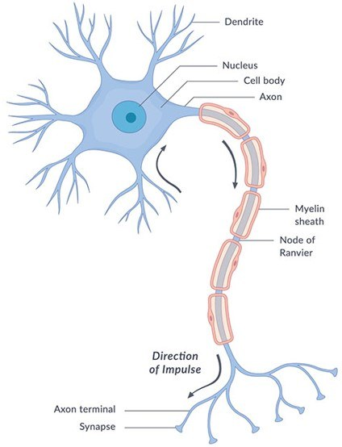
The neuron: impulses run dendrite → cell body → myelinated axon → synapse. From the module (NICHD).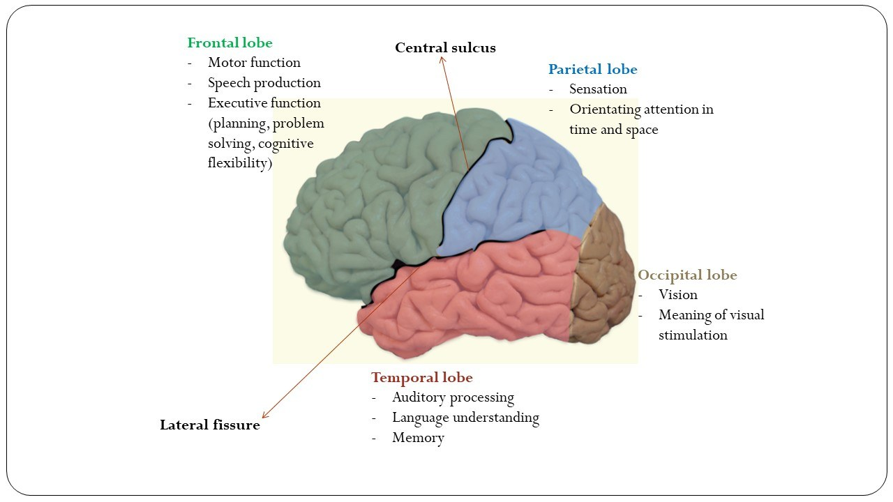
Main cortical regions. From the module.| Level | Components |
|---|---|
| Microscopic | Neurons generate, modify and transmit impulses; supporting cells include myelin-makers that insulate axons |
| CNS | Brain (cerebrum, cerebellum, brainstem) and spinal cord. Grey matter: cortex (folded into gyri), basal ganglia, thalamus, nuclei. White matter: myelinated axon tracts joining one area to another. |
| PNS | Cranial nerves, nerve roots (axons entering/leaving the cord), nerves, neuromuscular junction, muscle, sensory receptors |
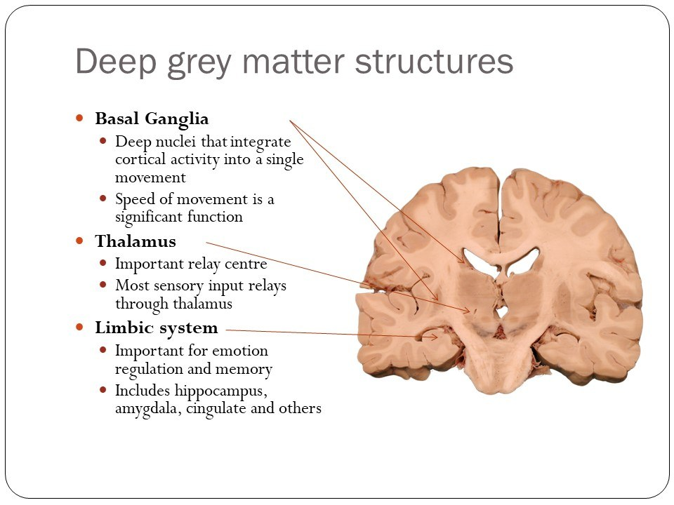
| Structure | Does | Lesion gives |
|---|---|---|
| Meninges | Connective tissue covering the brain | Meningitis = infection of them |
| Ventricles | Hold CSF, which is made constantly and absorbed into the veins | Blocked flow → hydrocephalus (↑ volume and pressure) |
| Basal ganglia | Execution of movement: initiation, speed, motor learning | Parkinsonism or extra movements |
| Thalamus | Integrates sensory and motor information; relays sensation to the cortex | |
| Cerebellum | Coordination: fine-tunes speech, swallowing, limbs, gait | Incoordination, not weakness |
| Brainstem | Midbrain, pons, medulla: all cranial nerve nuclei; tracts in and out | |
| Spinal cord | Cervical (C1–C8), thoracic (T1–T12), lumbosacral (L1–S4) segments; ends at ~L1 vertebra; below it the roots float as the cauda equina |
The Motor Pathway, UMN and LMN
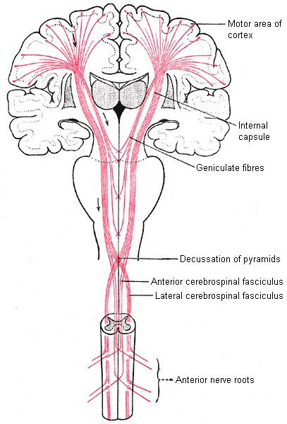
Central motor pathway: one neuron from cortex to anterior horn (up to 60 cm long). From the module.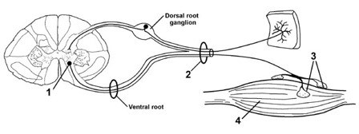
Peripheral motor pathway: 1 anterior horn cell, 2 nerve, 3 NMJ, 4 muscle. From the module.Plans the movement, on the opposite side to the moving limb.
Axons descend through white matter; cross in the medulla (pyramids).
Synapse at the level of the intended movement. Everything to here = UMN.
Acetylcholine at the NMJ triggers contraction. From the anterior horn cell on = LMN.
| Upper motor neuron (UMN) | Lower motor neuron (LMN) | |
|---|---|---|
| Localizations | Brain, brainstem, spinal cord | Anterior horn cell, root, plexus, nerve, NMJ, muscle |
| Reflexes | Hyperactive | Reduced or absent |
| Plantar | Extensor (Babinski) | Flexor or absent |
| Tone | Spasticity | Normal (or low) |
| Atrophy | No | Yes |
| Fasciculations | No | May be present |
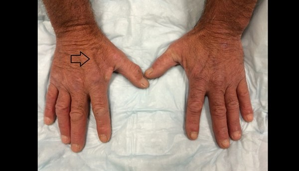
Cerebellum and basal ganglia loop back to the motor cortex to refine movement (cerebellum = accuracy; basal ganglia = control and timing). Their lesions don't cause weakness. Cerebellum: incoordination; picture someone drunk (slurred speech, clumsy limbs, unsteady gait). Basal ganglia: hard to start, slow, rigid (parkinsonism), or too much movement (chorea, dystonia, athetosis, hemiballismus).
The Homunculus
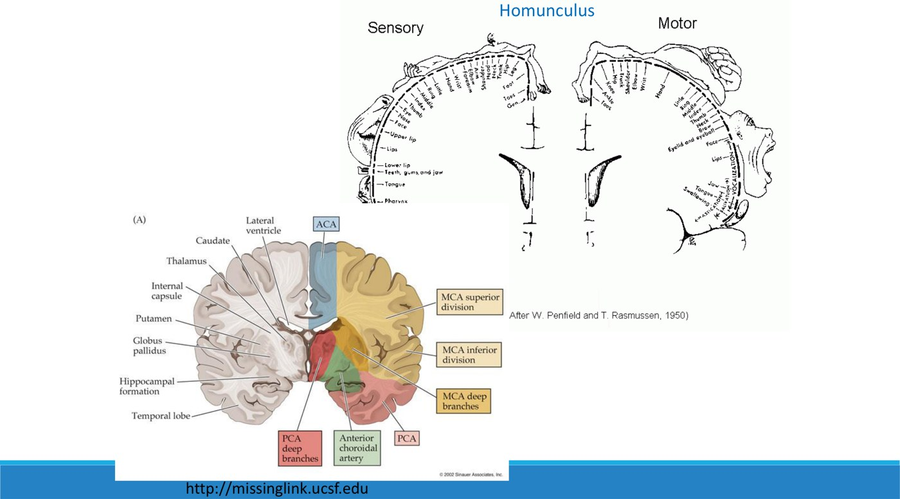
| Medial → lateral | Artery | So… |
|---|---|---|
| Leg, foot (medial surface) | ACA | ACA stroke: contralateral leg > arm |
| Shoulder → hand → face, mouth, tongue (lateral) | MCA | MCA stroke: contralateral face and arm > leg |
The hand sits next to the face: an expanding lesion in the face area weakens the hand and thumb before the elbow or shoulder.
Sensory and Visual Pathways
Sensory route: receptor → peripheral nerve → root → spinal cord → brainstem → thalamus → subcortical white matter → primary sensory cortex → association cortex.
| Nice to know | Dorsal column | Spinothalamic |
|---|---|---|
| Carries | Vibration, proprioception | Pain, temperature |
| In the cord | Dorsal; same side as the input | Lateral; opposite side |
| Crosses | In the medulla | At entry to the cord |
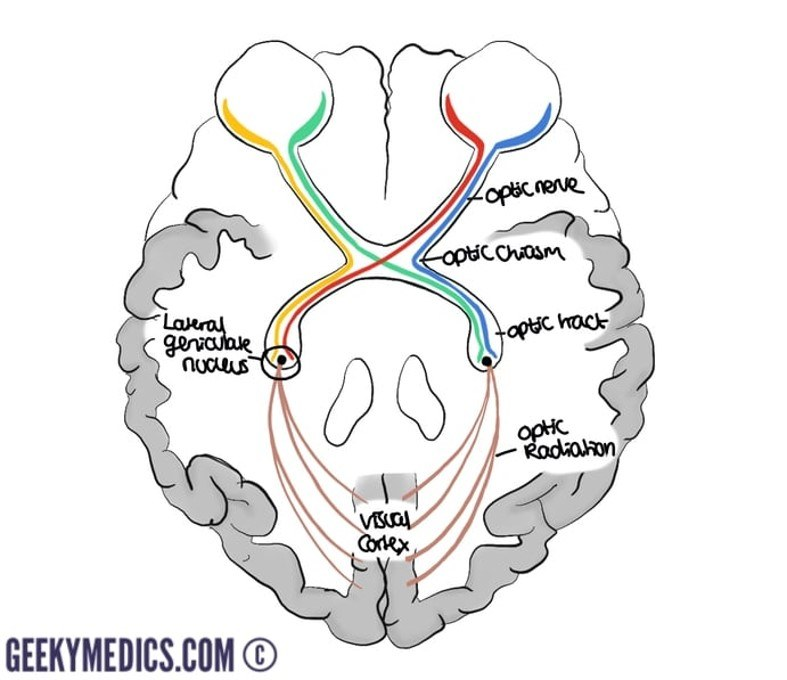
The visual pathway. From the module (Geeky Medics).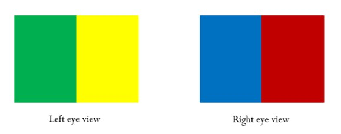
Colour key: left eye sees green (left field) and yellow (right field); right eye sees blue and red. From the module.| Where | Carries | Lesion |
|---|---|---|
| Retina / optic nerve (before the chiasm) | Everything one eye sees | Monocular loss |
| Optic chiasm (“crossing”) | The left hemifield of each eye goes to the right tract, and vice versa | |
| Optic tract → visual cortex (behind the chiasm) | The opposite visual field from both eyes: left cortex = whole right field | Same-side field loss in both eyes (homonymous) |
The retina receives the image flipped and inverted (a camera obscura); the occipital pole processes it.
Localize, Then Differentiate
“Each patient is a puzzle.”
The Neurological Approach
History and exam: summarize the symptoms and signs.
Use logic on the signs to localize.
From the rate of onset and progression, demographics, other symptoms and the localization. Most likely? What must I not miss (treatable, serious)?
Chosen by the localization and differential.
It narrows the diagnosis and picks the test: don't order a CT head for a spinal cord problem, or a spine MRI for a muscle problem. Nerve and muscle problems need EMG and nerve conduction studies, not imaging.
How to Localize
| Step | Ask |
|---|---|
| 1. CNS or PNS? | UMN features (brisk reflexes, spasticity, Babinski) → CNS. LMN features (↓ reflexes, atrophy, fasciculations) → PNS. |
| 2. Narrow it down | Cortical signs? Language impairment or neglect = cortex |
| Sensation spared? Anterior horn cell, NMJ and muscle disorders spare sensation | |
| Painful? Root problems usually hurt | |
| Distribution? Does it fit a root, nerve or pattern? | |
| Bladder? Suggests spinal cord or cauda equina |
| Pattern of weakness | Localization |
|---|---|
| Hemibody with face or cranial nerves | Brain |
| Hemibody, no face or cranial nerves | (Cervical) spinal cord |
| Quadriparesis | Cervical cord |
| Paraparesis | Thoracic cord or lumbar roots |
| One myotome | A root |
| One nerve's territory / several nerves | Mononeuropathy / multiple |
| Eyes and swallowing | Neuromuscular junction |
| Generalized proximal | Muscle |
Cord vs roots: the cord ends at about L1. Lesions at L1 and above give a UMN pattern; below L1 (cauda equina) an LMN pattern.
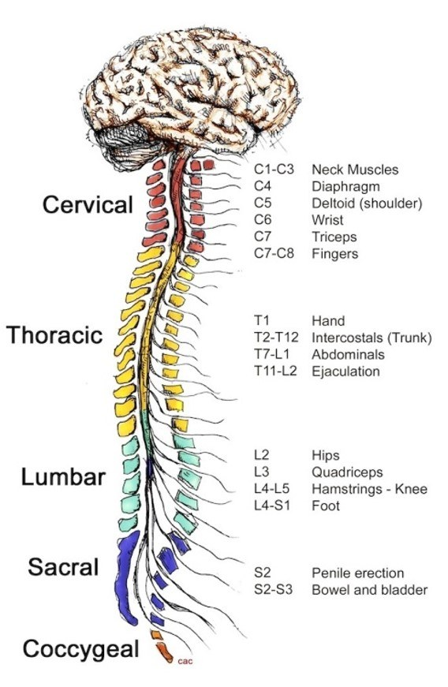
The Differential: Time Course and VITAMINS C&D
| Onset | Think |
|---|---|
| Hyperacute (seconds–minutes) | Stroke (ischemic or hemorrhagic), migraine aura (resolves over minutes), trauma |
| Acute (hours–a couple of days) | Inflammation, infection |
| Subacute (days–weeks) | Inflammation, infection, tumour, toxic (and slowly growing bleeds) |
| Chronic (months–years) | Degenerative, hereditary |
| VITAMINS C&D |
|---|
| Vascular · Infectious · Trauma · Autoimmune · Metabolic · Inflammatory/iatrogenic · Neoplastic · Seizure/pSychogenic · Congenital · Degenerative |
| Sudden aphasia: the differential |
|---|
| Ischemic stroke · intracranial hemorrhage · migraine · post-ictal Todd's paresis · metabolic upset on top of an old structural lesion (e.g., hypoglycemia) · psychogenic |
Language: expressive (motor) language is in the inferior frontal lobe, receptive in the posterior temporal lobe, both in the dominant hemisphere.
The Four Practice Cases
1. A 44-year-old physician sees flashing lights on her right; covering either eye, both right half-fields are distorted. It lasts 20 minutes, then a throbbing left headache.
Localization and diagnosis
The right field of both eyes = behind the chiasm; vision only, no other deficits → left occipital (visual) cortex (the left optic tract is possible but sits beside too many other structures). Hyperacute but gone in 20 minutes and followed by headache → migraine aura. If it had persisted: occipital stroke.
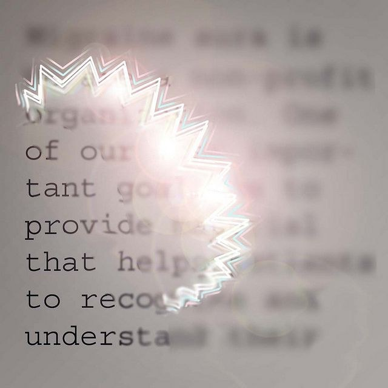
2. A 75-year-old: 2 months ago trouble naming objects, 1 month ago wrong words, this week sentences make no sense. Slight right facial droop, poor naming and repetition, follows commands, normal reflexes.
Localization and diagnosis
Aphasia + right face → left cerebral cortex (dominant). Subacute progression over 2 months fits infection, tumour, inflammation or a slowly growing bleed; strokes are sudden and then improve, and Alzheimer's progresses over years. CT: a chronic subdural hematoma over the left hemisphere with midline shift. Elderly people get them after even minor trauma; acute blood is white on CT, chronic blood turns dark.
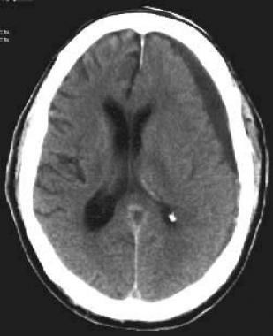
3. A 68-year-old woman: 3 weeks of worsening gait with falls, clumsy hands, urinary frequency and urgency. Mild bilateral hip flexor weakness, very brisk reflexes in arms and legs, both toes up, poor vibration at both great toes, wide unsteady gait.
Localization and diagnosis
UMN (brisk reflexes, Babinski). Bilateral and symmetric (one brain lesion would be one-sided), with bladder symptoms → spinal cord; hands involved → cervical (a thoracic lesion spares the hands). MRI: cervical spondylotic myelopathy, cord compressed at C4/C5 by degenerative discs and vertebrae, with bright signal (injury) in the cord.
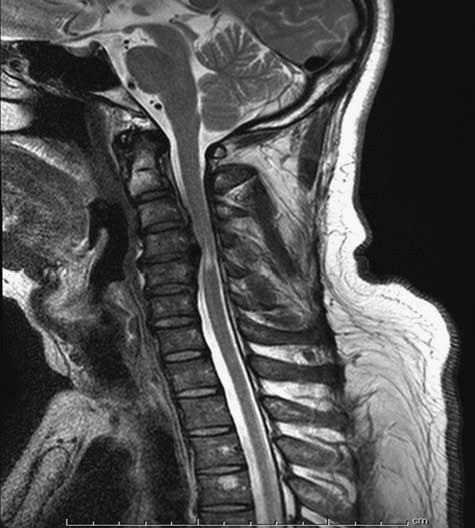
4. A 59-year-old woman: 6 months of low energy, feeling stiff and slowed down; no sensory or bladder symptoms. Reduced blinking, soft voice, normal power and reflexes, mild rigidity in both arms, slow finger taps, reduced arm swing.
Localization and diagnosis
Slow movement with normal strength and reflexes = basal ganglia. Slowly progressive → Parkinson's disease.
Built from Dr. Christen Shoesmith's “Introduction to Neurology” module: the recorded introduction and its slides (“Introduction to Neuroscience, Eye and Ear”), the optional review chapters and their PDF (“Introduction to the nervous system”), and the four practice cases. Images are the module's own (NICHD, neuroanatomy.ca, Geeky Medics, Medscape and journal figures as credited there). The two embedded YouTube videos (Babinski, fasciculations) aren't reproduced.